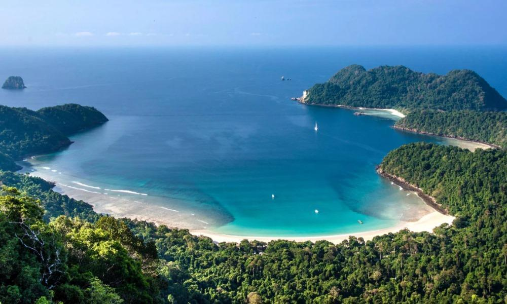
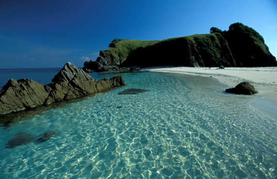
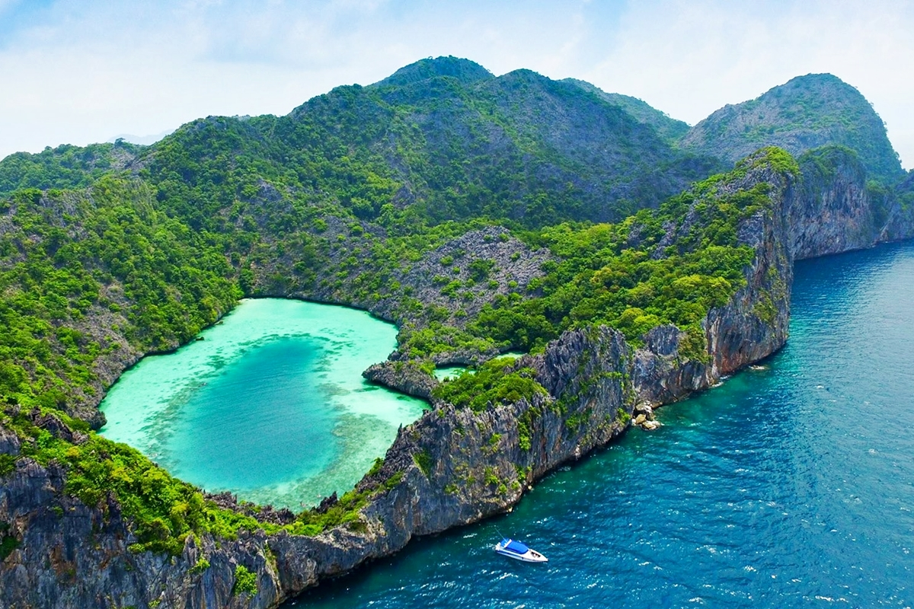

Myeik (also known as Mergui Archipelago) is a group of islands located in the Southern region of Myanmar on the Andaman Sea. It comprises more than 800 pristine islands of varying sizes. These untouched islands are renowned for their pristine white-sand beaches and diverse marine life. Myeik City, located in the far south of the region is a must see. Apart from being a gorgeous and remote island, Myeik also has a host of to an amazing colonial-era buildings, and boasts a 500-year long nautical history. The clear waters are also perfect for pearl cultivation. For a nature lover, Myeik is heaven on earth.
|  | Macleod Island Macleod is an unspoiled island with white-sand beaches and crystal clear waters in the Myeik Archipelago. Located around 40 nautical miles away from Kawthaung, it is a prime location for snorkelling, diving, sea kayaking, fishing, bird watching, trekking and jungle safari. Tourists can take advantage of guided trips to explore the island. |
|---|
Lampi Island Lampi Island is the largest and most famous island in this region. Located in the Southern half of the archipelago, this island is shaped like a giant horseshoe. It was established as Myanmar’s first Marine National Park in 1995 and hosts an unbelievable variety of flora and fauna. It was declared as an ASEAN Heritage Park in 2003. |
 |
|---|
|  | Cocks Comb Island Cocks Comb Island or the emerald heart island requires a 4-hour journey by boat from Kawthaung. It is the new destination for the Andaman Sea Snorkeling Tour. The highlight is the heart-shaped lagoon located in between mountains of the island. It is considered a treasure island for underwater life. The island also has innumerable caves. |
|---|
Copyright @AnyGo Travel and Tours
2020 All Rights Reserved